Arrestments &
Debt Collection
Transparency
Turning a stressful legal-banking scenario into a clear self-service experience that helps clients understand what happened, what money was affected, and what they can do next.
Key Achievements
−23.8%
Support inquiries, first-time collections (Segment A)
−18.5%
Support inquiries, repeat collections (Segment B)
−31%
Trigger-based inquiries after arrest notifications
−21%
Back-office requests in the test group
~20m ₽
Annual savings from reduced support volume
7%
Inquiries fully resolved by chatbot with new intents
(01) Challenge
A "black box"
at the worst
possible moment
When users fall behind on taxes, traffic fines, utilities, or alimony, bailiffs can issue enforcement orders to freeze bank accounts — often without any prior notice. At T-Bank, with 48M customers, this is a high-frequency, high-stakes event.
The experience was a dead end. Customers would discover the freeze through a failed transaction at checkout, a sudden zero balance, or a cryptic line in their history. There was no clear path to resolution — only confusion, panic, and a call to support.
Goal
Make debt arrests fully transparent — give every user instant clarity
on what happened, why, and the exact steps to resolve it.
Final flows
The user faced a funds seizure for the first time
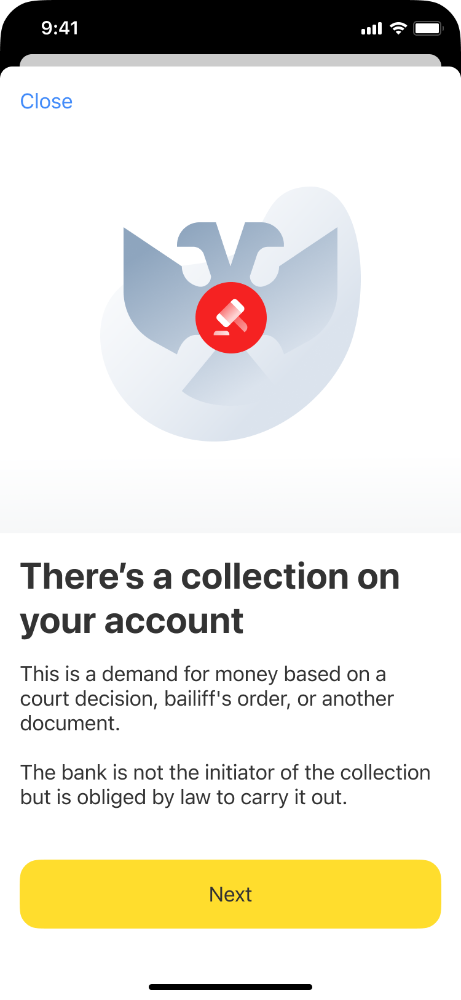
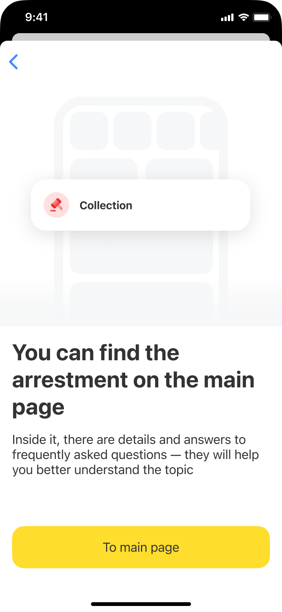
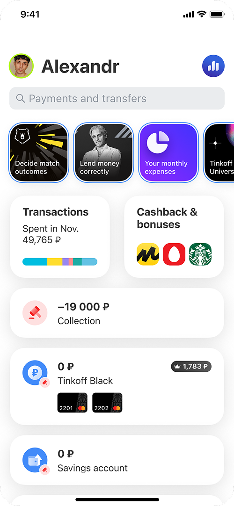
Enforcement collection imposed and funds debited
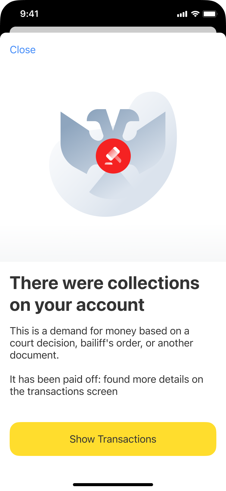
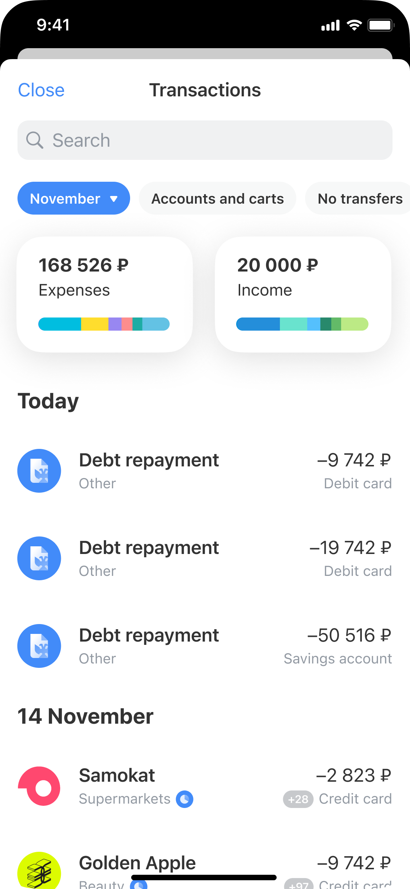
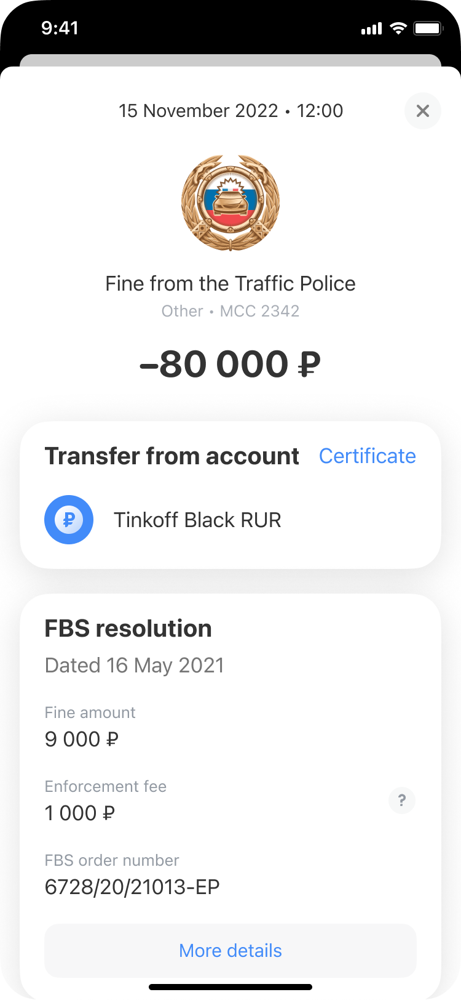
Details
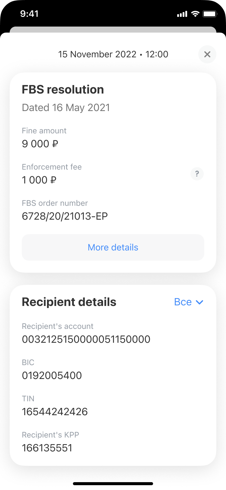
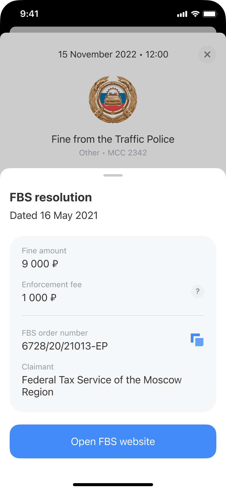
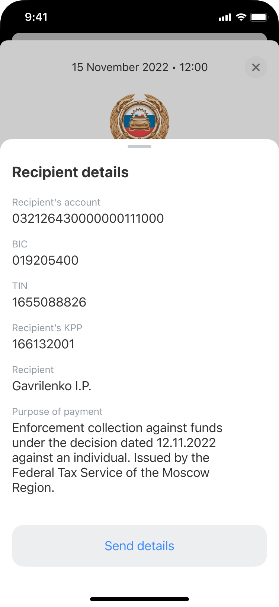
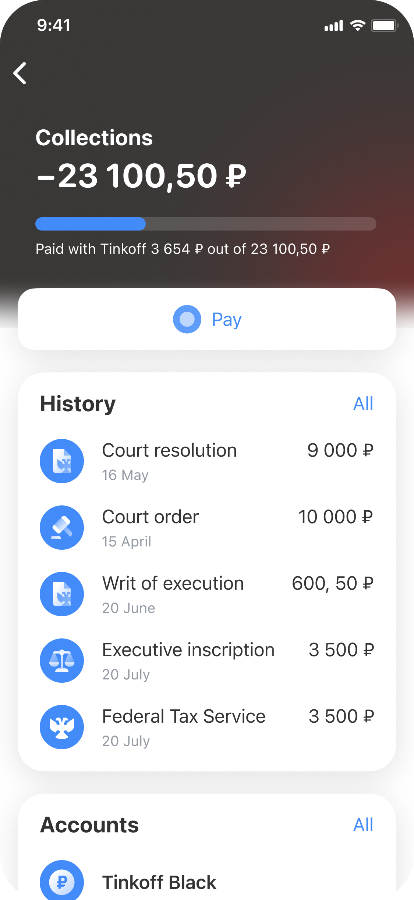
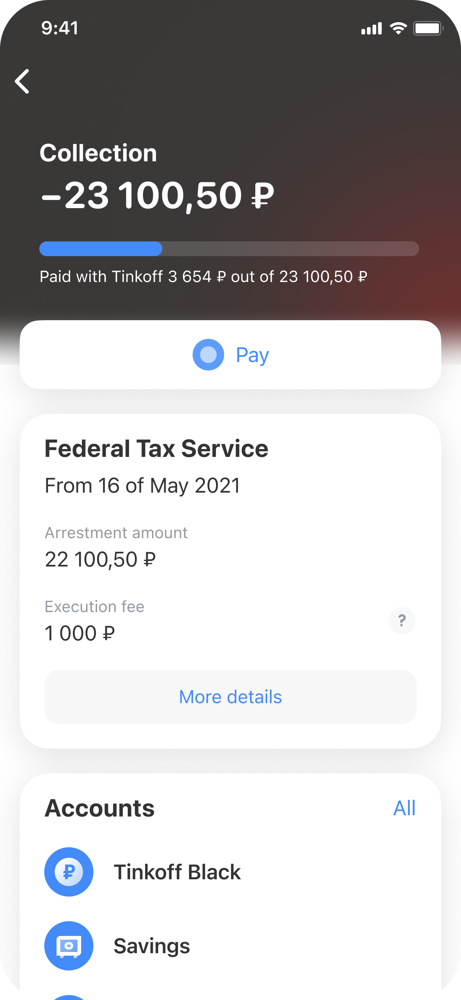
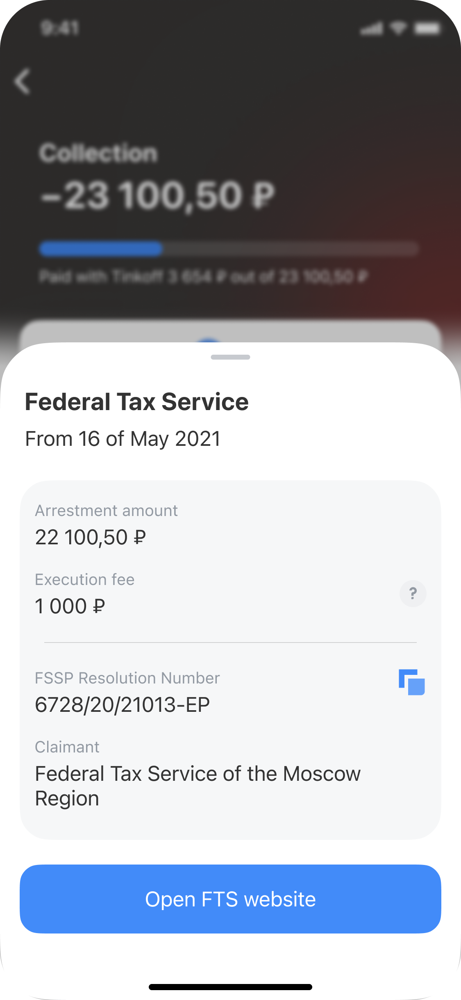
The enforcement collection has been settled
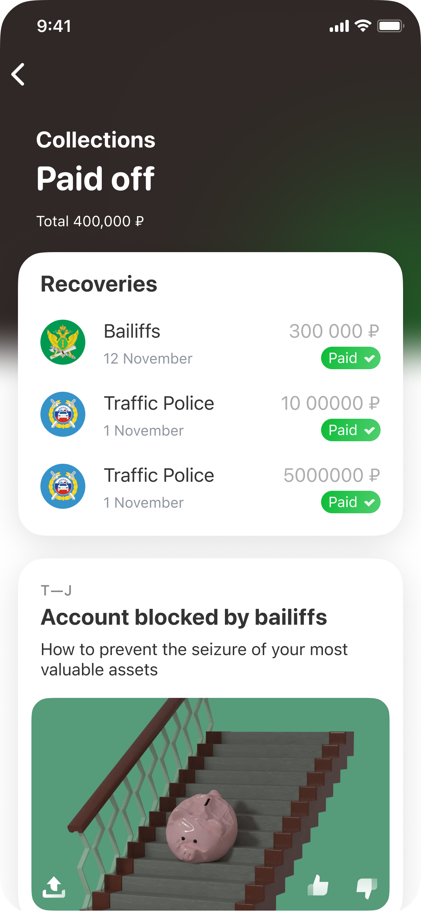
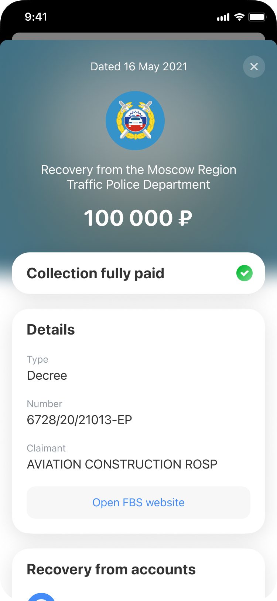
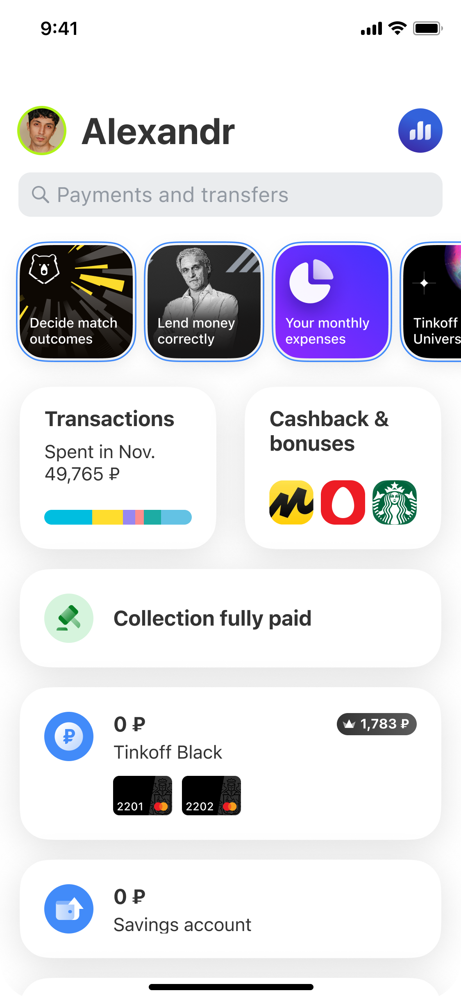
My Role
I joined as the only designer to transform this dead end into a transparent self-service flow. An initial concept existed but was outdated — missing transaction visibility, payment options, and detailed debt information.
Actions
Fixed the data flow
In collaboration with the PM and multiple teams to make sure users could actually see their debt details instead of just a blank screen.
Simplified legal language
Using guidelines from our compliance team, I translated scary legal terms into clear, human-friendly text to reduce user panic.
Built a recovery path
I designed the flow that allowed users to pay off their debts and unfreeze their accounts directly in the app.
Client profile under debt Collection


CORE PAIN
No visibility into what was taken or what remains accessible
Could resolve instantly, but the interface made it nearly impossible to find how
Feared delinquency but had no way to pay loans while accounts were frozen
Baseline
~ 280k
Monthly orders
142K unique clients affected
250k
Support contacts in the same period
Nearly 1 contact per order. Every arrest triggered a call
80%
Had only one arrest
20% were dealing with multiple simultaneous orders
4%
Resolved within a month
Most took longer than 10 days, a prolonged, stressful experience
~ 50%
Had no funds at the time of arrest
Likely inactive accounts, yet still generating confusion and support load when the order arrived
How clients found out about the existing enforcement collection before:
Failed payment attempt
Payment fails
because their accounts have been reduced to
zero or negative balance
.
In the mobile app
When running the app, the client can see a
negative balance
or find details about the
write-off
in the transaction history.
SMS from bank
The bank sends an
SMS
, notifying the client about the start of the collection process.

On the State Services portal (Gosuslugi):
Information about the debt collection might appear on
Gosuslugi
earlier than in the bank's system, allowing the client to learn about it in advance.
(2) Design and Development Process
Data Collection and Approval
I worked with multiple teams to gather real-time collection data and consulted compliance for accurate legal guidance. This provided the foundation for building an interface that would deliver the needed clarity and transparency for customers.
Defining the main problems
USER PROBLEM
Customers had no way to understand what was arrested, what was accessible, why it happened, or what to do. Loan arrears rose 30 - 40% during seizures because users didn't know they could still pay.
01
No dedicated arrestments screen
02
No transaction visibility for write-offs
03
No explanation of legal context
04
No loan payment path under seizure
BUSINESS PROBLEM
Every enforcement batch triggered a spike in support contacts. Many clients were closing accounts to escape restrictions — a retention problem layered on top of a support problem.
01
High support call and back-office volume
02
No chatbot intents for arrest topics
03
Client churn from account closures
04
Overlapping issues: loans + deposits + piggy bank + payment installments
DESIGN TENSION
Three parties, intersecting flows, legal constraints. The interface had to serve all three — without violating law or sacrificing any side's core interest.
User
Must pay the loan to avoid delinquency — but the seized account blocks standard payment paths. Needs a way out that's visible and accessible.
Bank
Wants to retain the client and prevent loan default — but cannot redirect seized funds to a loan account before the enforcement order is satisfied.
Law
Enforcement order must be settled first. Seized funds cannot flow to another obligation. Every action the interface offers must be legally permissible.